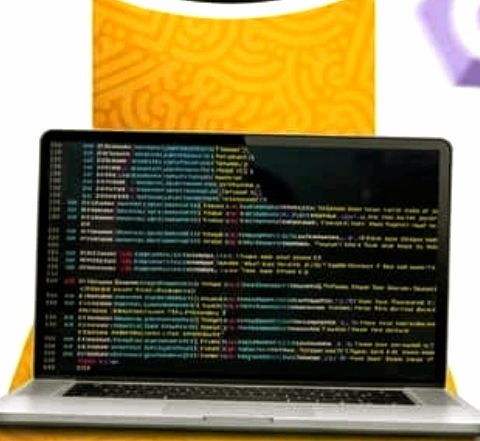

Bienvenue sur mon site

Bonjour, je suis Assan Njoya.
Je suis étudiant à l'IFP ASSIIN ACADEMY de Foumban, passionné par le developpement web. je crée des sites moderne pour les entreprises de Foumban.
Me contacter sur WhatsApp

Bonjour, je suis Assan Njoya.
Je suis étudiant à l'IFP ASSIIN ACADEMY de Foumban, passionné par le developpement web. je crée des sites moderne pour les entreprises de Foumban.
Me contacter sur WhatsApp